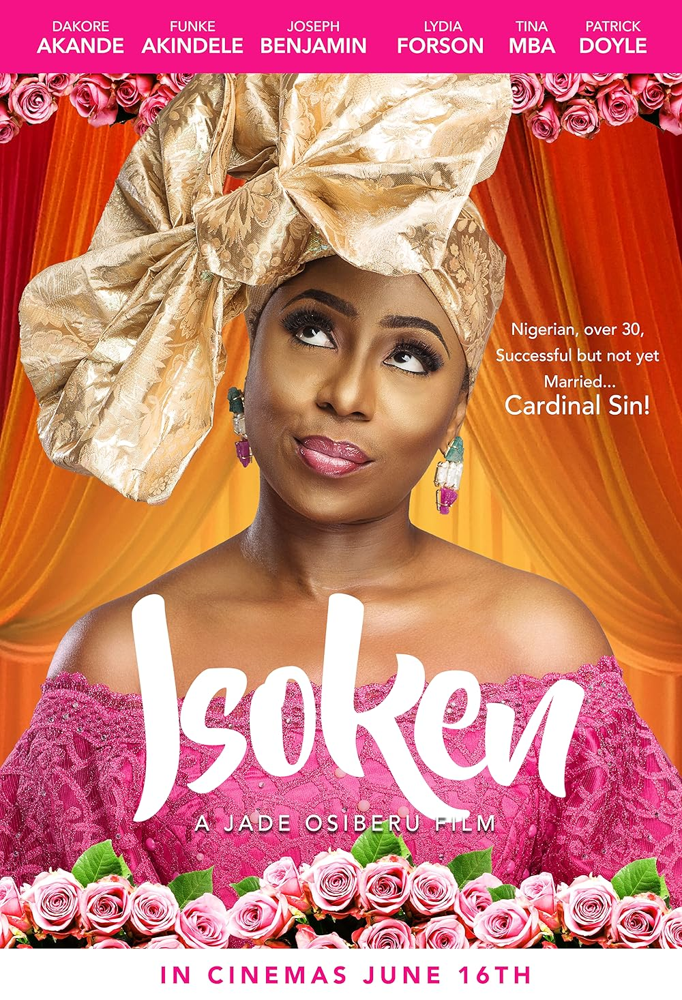
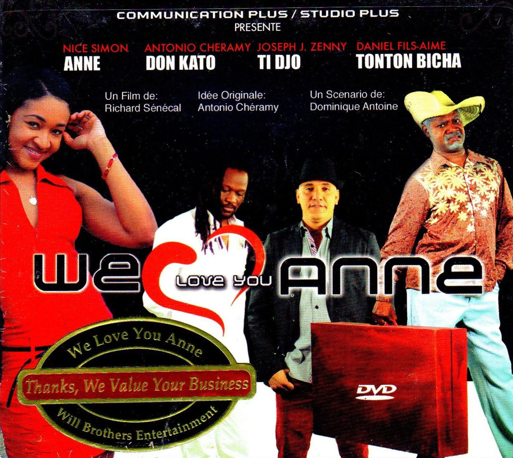
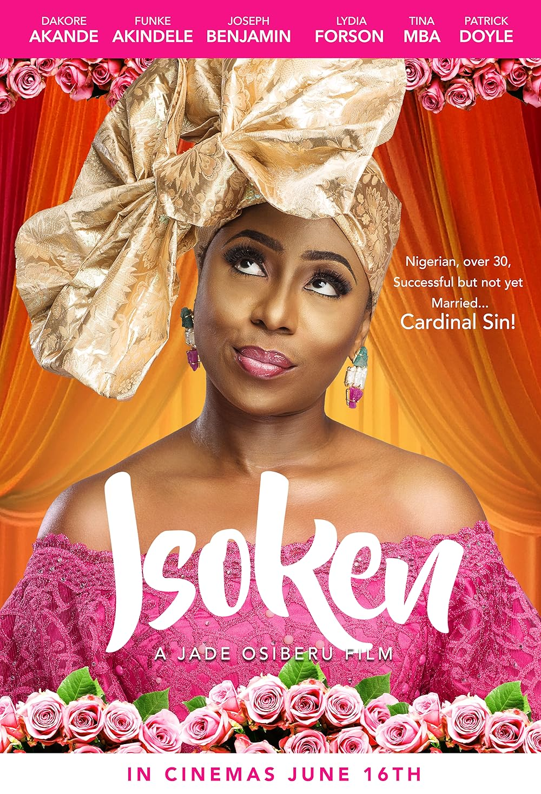
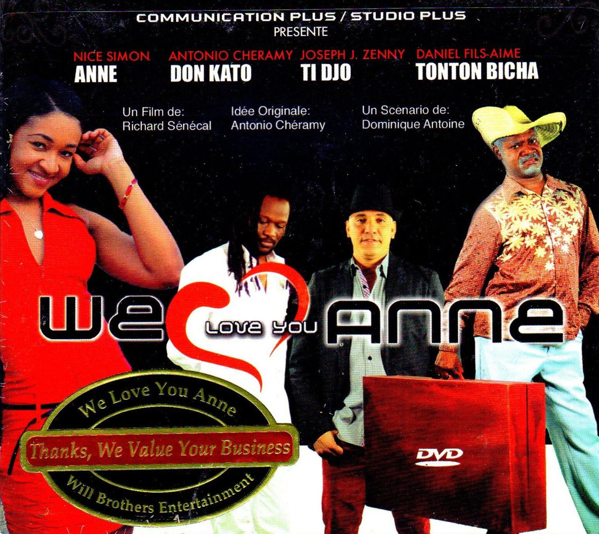

Genre: Comedy Runtime 1h 49m Rating
Two FBI agent brothers, Marcus (Marlon Wayans) and Kevin Copeland (Shawn Wayans), accidentally foil a drug bust. As punishment, they are forced to escort a pair of socialites (Anne Dudek, Rochelle Aytes) to the Hamptons, where they're going to be used as bait for a kidnapper. But when the girls realize the FBI's plan, they refuse to go. Left without options, Marcus and Kevin decide to pose as the sisters, transforming themselves from African-American men into a pair of blonde, white women.
Genre: Romance Comedy Runtime 1h 40m Rating
A successful 34-year-old Nigerian woman faces family pressure to marry a suitable Nigerian man, but unexpectedly falls for a Caucasian, challenging cultural norms and expectations. It explores the relationship's impact on family bonds.
Genre: Romance Comedy Runtime 1h 56m Rating
Anne falls in love with Don Kato, the reggae singer with dreadlocks. Tonton Bicha, her eccentric father, opposes. He will do anything to break the relationship while he favors Jude, the handsome but obscure entrepreneur.